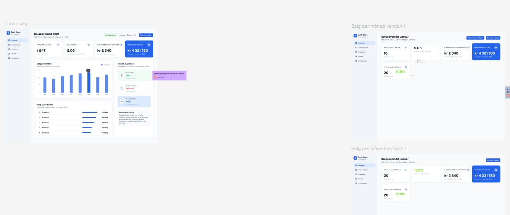

UX/UI · Figma · Pågående
Salgsdashboard
Et pågående designprosjekt der jeg undersøker hvordan salgsdata kan organiseres og presenteres på en intuitiv måte.
Pågående prosjekt
Arbeidet så langt
Det viktigste først
Jeg arbeider med å gjøre nøkkeltall, månedssalg og produktinformasjon raske å forstå og sammenligne. Designet utforsker et tydelig visuelt hierarki, en fast kortstruktur og selektiv bruk av farger for handlinger, status og utvikling.
Prosjektet er fortsatt under utvikling. Neste steg er å videreutvikle komponentene, undersøke flere responsive visninger og teste om navigasjonen og informasjonsstrukturen fungerer som tiltenkt.
Designfokus
Informasjonshierarki
Nøkkeltall øverst, etterfulgt av trender, produkter og forklarende innsikt.
Komponenter
Gjenbrukbare kort og faste mønstre skal skape konsistens mellom visningene.
Videre arbeid
Responsivitet, prototyping og brukertesting inngår i den videre prosessen.